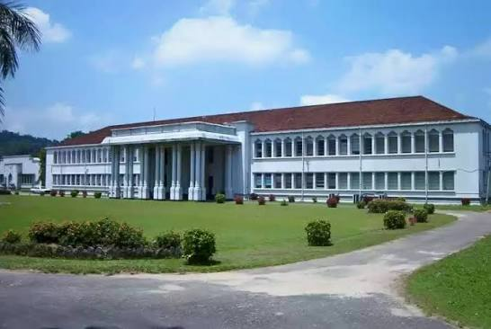

Faculty of Engineering, University of Peradeniya
The first engineering faculty in Sri Lanka, founded in 1950.
About the faculty
The Faculty of Engineering is part of the University of Peradeniya in Peradeniya, Sri Lanka. It opened in 1950 as the country's first engineering faculty and has been on its current campus since 1964.
The faculty has eight departments and offers the Bachelor of the Science of Engineering Honours degree in six specializations. Optimum Racing is the university's Formula Student team.
- Founded
- 1 July 1950, in Colombo
- At Peradeniya since
- 1964
- Students
- Around 2,200, undergraduate and postgraduate
- Academic staff
- Over 100 with doctoral qualifications
- Address
- Faculty of Engineering, University of Peradeniya, Prof. E.O.E. Pereira Mawatha, Peradeniya 20400, Sri Lanka
- Website
- eng.pdn.ac.lk
Departments
- Chemical and Process Engineering
- Civil Engineering
- Computer Engineering
- Electrical and Electronic Engineering
- Manufacturing and Industrial Engineering
- Mechanical Engineering
- Engineering Mathematics
- Engineering Management
A short history
- 1942
The University of Ceylon is founded
Sri Lanka's first university opens. The University of Peradeniya grew out of it.
- 1950
The faculty opens in Colombo
On 1 July, the University of Ceylon starts its Faculty of Engineering, the first in the country. Prof. E.O.E. Pereira is entrusted with setting it up. Civil, Electrical and Mechanical Engineering are the founding departments.
- 1953 to 1964
Years in temporary buildings
Teaching continues in temporary buildings at Thurstan Road in Colombo while the permanent campus is planned.
- 1964
The move to Peradeniya
The faculty moves into its permanent home at Peradeniya, where it still stands today.
- 1978
The present name
After the University of Sri Lanka is dissolved, the faculty returns to the name Faculty of Engineering, University of Peradeniya.
- 2025
75 years of engineering education
The faculty celebrates its Diamond Jubilee.